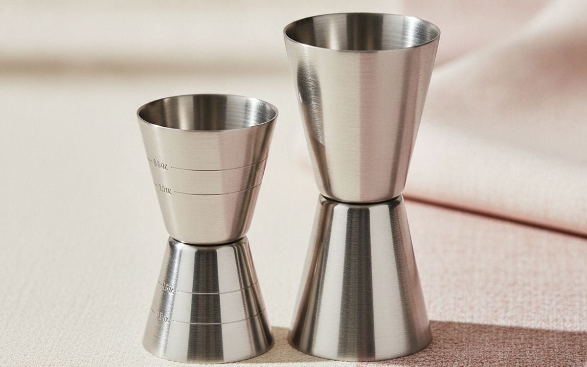
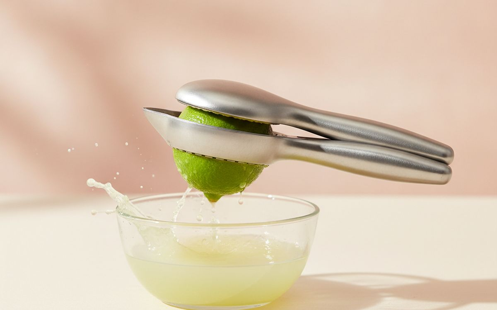
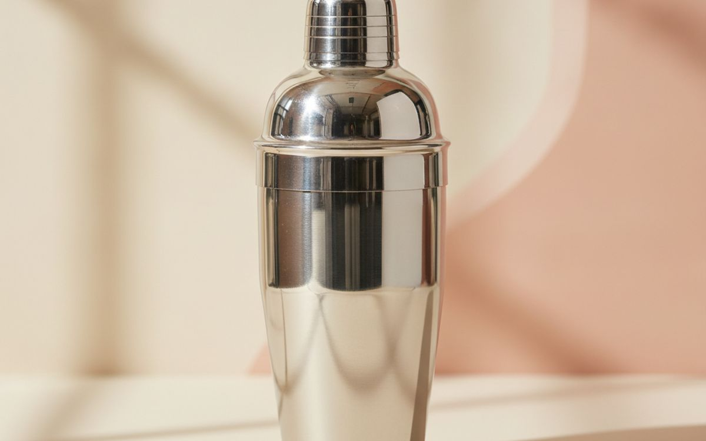
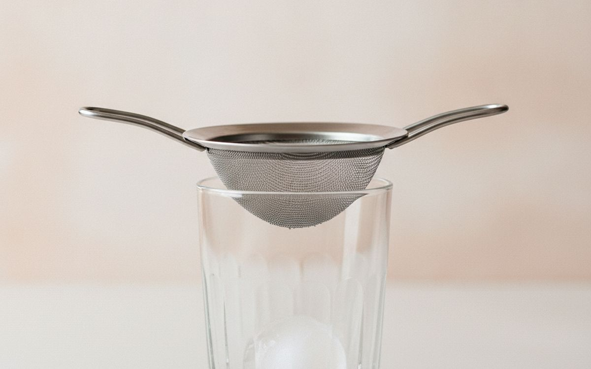
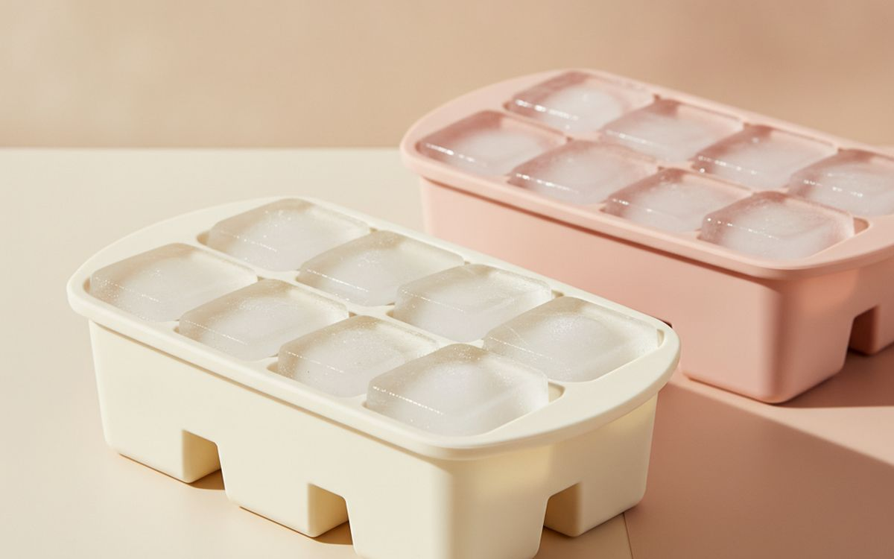
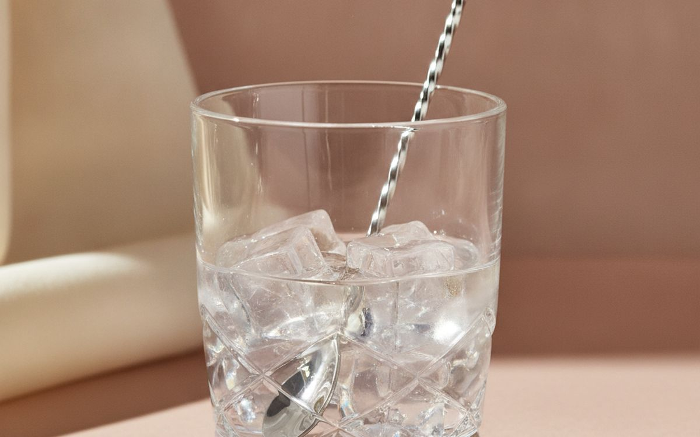
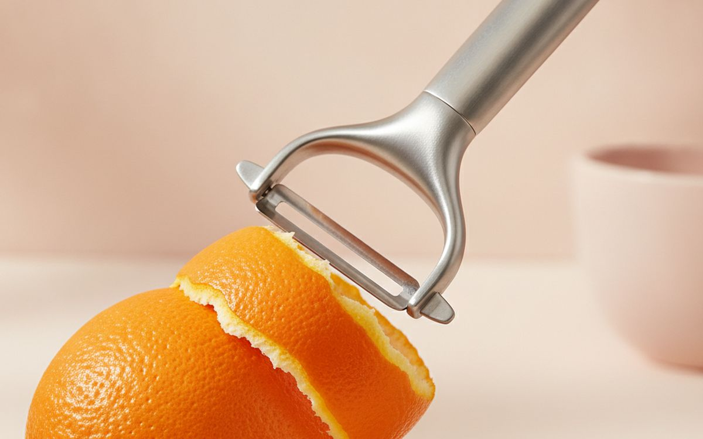
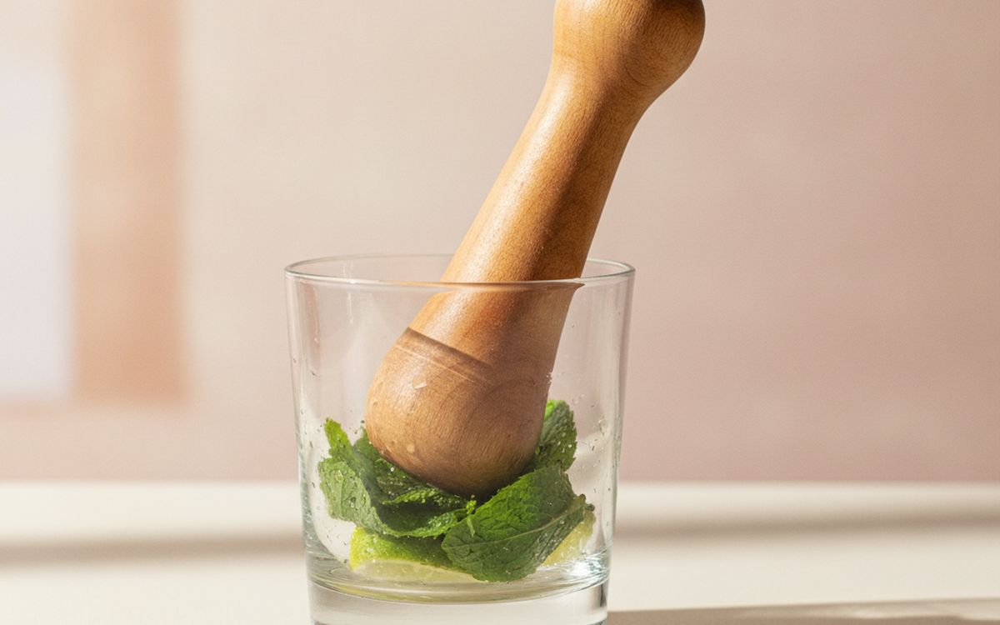
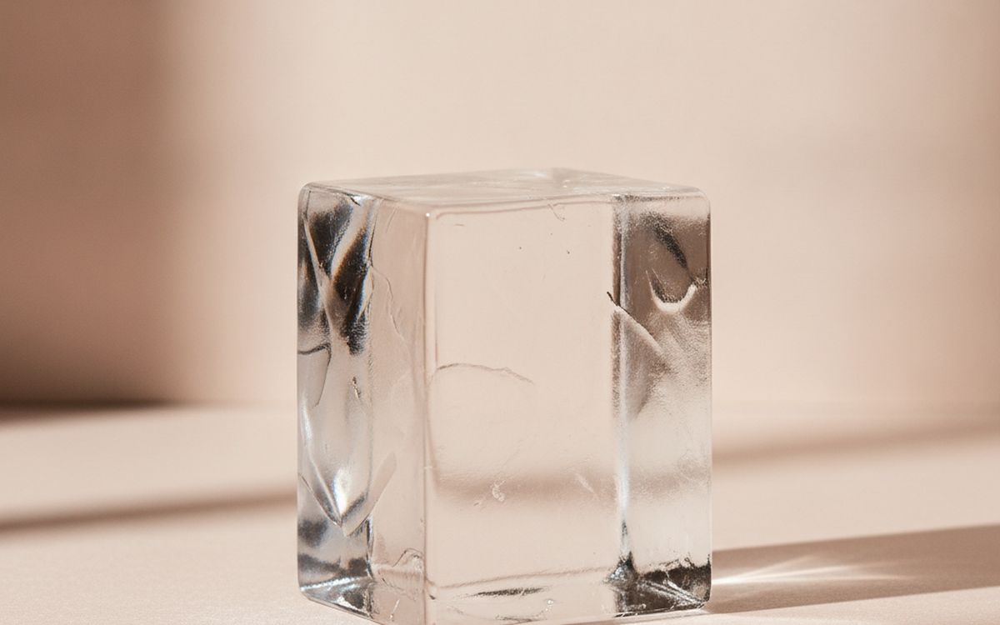
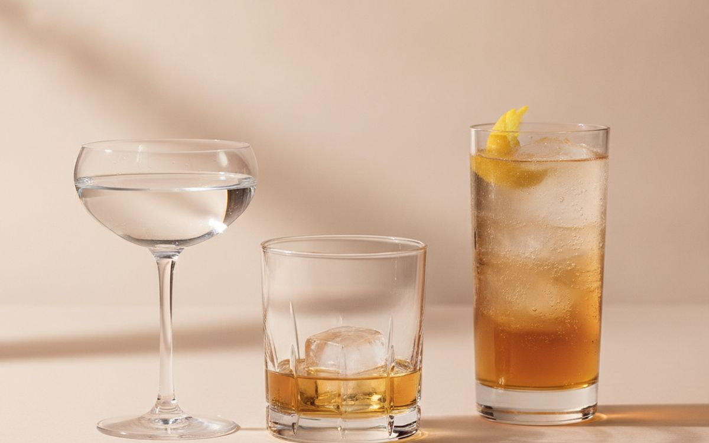

Most home cocktails go wrong for boring reasons: guessed measurements, bottled lemon juice, and small cloudy ice that melts and waters everything down. The expensive gadgets in cocktail gift sets fix none of this, and the 20-piece sets are mostly filler.
This list is ordered by leverage. The first few items cost very little and fix most bad drinks. After that come the tools that make it quicker and more fun. You can make almost every classic cocktail with the first five.
Prices below are approximate street prices at the time of writing and move around constantly, especially during sale events. Treat them as a rough band for budgeting, not a quote. Always check the live listing before you buy.
Kurz gesagt
A Japanese-style double jigger
The tool that fixes most bad drinks
Hinweis. Die Links auf dieser Seite sind Affiliate-Links. Wenn Sie darüber kaufen, erhalten wir unter Umständen eine Provision ohne Mehrkosten für Sie. Das beeinflusst weder die Auswahl noch die Reihenfolge dieser Liste.
Wie wir ausgewählt haben
These picks come from professional bartenders' recommendations, drinks writers and long-run owner reports, cross-checked against current retail listings. We have not personally tested every item here. We favoured simple, durable tools used in real bars over novelty sets. Please drink responsibly and only if you are of legal drinking age.
Auf einen Blick
Die Preise sind Näherungswerte zum Zeitpunkt der Erstellung und ändern sich häufig.
Die Empfehlungen

01 · The tool that fixes most bad drinksA Japanese-style double jigger
Cocktails are recipes, and a quarter ounce too much of something sour or sweet throws the whole drink off. A slim Japanese-style jigger with inner measurement lines lets you pour accurate 1/2, 3/4, 1 and 2 ounce measures. It is the cheapest tool here and the one that makes the biggest difference. Stainless steel lasts forever; the tall narrow shape is easier to pour accurately than the wide classic type. The case for it: accurate, repeatable drinks, very cheap, and lasts forever. The trade-off is real: takes a few tries to pour without spilling and check units; some are metric only, so weigh that against how often it would actually get used.
$8-15Der Kompromiss: Takes a few tries to pour without spilling
Warum es hier steht
- Accurate, repeatable drinks
- Very cheap
- Lasts forever
Gut zu wissen
- Takes a few tries to pour without spilling
- Check units; some are metric only

02 · Fresh juice in secondsA handheld citrus press
Bottled lemon and lime juice taste flat and slightly chemical. Fresh juice is the difference between a sour that tastes like a bar and one that tastes like a mixer. A sturdy hinged press juices a lime in one squeeze, catches the seeds, and goes in the dishwasher. Get the lime size; it works for lemons too, and many people end up using it for cooking every day. The case for it: fresh juice in seconds, catches seeds, and useful in the kitchen too. The trade-off is real: coated presses can chip over time and oranges need a bigger press, so weigh that against how often it would actually get used.
$10-20Der Kompromiss: Coated presses can chip over time
Warum es hier steht
- Fresh juice in seconds
- Catches seeds
- Useful in the kitchen too
Gut zu wissen
- Coated presses can chip over time
- Oranges need a bigger press

03 · Shaken drinksA two-piece Boston shaker (tins)
Three-piece cobbler shakers with built-in strainers look nice but often jam when cold. Professionals use two metal tins, one large and one small, which seal with a tap, chill fast and come apart easily. Weighted tins feel steadier. They also double as a mixing vessel. Once you have used a pair, the cobbler type goes back in the cupboard. The case for it: chills drinks fast, does not jam like cobbler shakers, and tough and simple. The trade-off is real: sealing takes a bit of practice and needs a separate strainer, so weigh that against how often it would actually get used.
$15-30Der Kompromiss: Sealing takes a bit of practice
Warum es hier steht
- Chills drinks fast
- Does not jam like cobbler shakers
- Tough and simple
Gut zu wissen
- Sealing takes a bit of practice
- Needs a separate strainer

04 · Clean, smooth drinksA Hawthorne strainer and fine mesh strainer
A Hawthorne strainer, the one with the spring, holds back ice when pouring from a shaker tin. A small fine mesh strainer catches tiny ice chips and pulp for a smoother drink, especially sours served straight up. Pour through both at once, known as double straining. Together they cost less than one novelty gadget. The case for it: keeps ice and pulp out, makes drinks silky, and cheap. The trade-off is real: fine strainers are slow with pulpy drinks and loose springs wear out on cheap ones, so weigh that against how often it would actually get used.
$12-25Der Kompromiss: Fine strainers are slow with pulpy drinks
Warum es hier steht
- Keeps ice and pulp out
- Makes drinks silky
- Cheap
Gut zu wissen
- Fine strainers are slow with pulpy drinks
- Loose springs wear out on cheap ones

05 · Slower melting iceLarge-cube silicone ice trays
Small freezer-door ice melts fast and waters drinks down. Two-inch cubes melt slowly, keep a drink cold and look better in a rocks glass. Silicone trays with lids stop the ice picking up freezer smells. Keep one tray of large cubes for serving and your regular ice for shaking. The case for it: less dilution in the glass, looks good, and lids keep ice clean-tasting. The trade-off is real: large cubes freeze slowly and cubes are cloudy without a clear mould, so weigh that against how often it would actually get used.
$10-20Der Kompromiss: Large cubes freeze slowly
Warum es hier steht
- Less dilution in the glass
- Looks good
- Lids keep ice clean-tasting
Gut zu wissen
- Large cubes freeze slowly
- Cubes are cloudy without a clear mould

06 · Stirred drinks like a MartiniA mixing glass and long bar spoon
Spirit-only drinks like a Martini, Manhattan or Negroni should be stirred, not shaken, for a silky, clear texture. A heavy mixing glass and a long twisted bar spoon make this easy. You can stir in a pint glass, but a proper mixing glass has a spout and holds more ice. The bar spoon also measures roughly a teaspoon. The case for it: correct texture for stirred drinks, spout for clean pouring, and looks great on a bar cart. The trade-off is real: glass mixing jugs can crack and needs a strainer too, so weigh that against how often it would actually get used.
$20-40Der Kompromiss: Glass mixing jugs can crack
Warum es hier steht
- Correct texture for stirred drinks
- Spout for clean pouring
- Looks great on a bar cart
Gut zu wissen
- Glass mixing jugs can crack
- Needs a strainer too

07 · Citrus twists and garnishesA Y-peeler
A strip of citrus peel squeezed over a drink adds aromatic oils that change the whole smell and taste. A sharp Y-peeler takes wide strips with little bitter pith. It is the same tool you use for vegetables, and a cheap one works well. This is the easiest way to make a drink look and smell like a bar made it. The case for it: adds aroma to drinks, makes proper garnishes, and doubles as a kitchen tool. The trade-off is real: blades dull over time and wash quickly; citrus oils stick, so weigh that against how often it would actually get used.
$5-10Der Kompromiss: Blades dull over time
Warum es hier steht
- Adds aroma to drinks
- Makes proper garnishes
- Doubles as a kitchen tool
Gut zu wissen
- Blades dull over time
- Wash quickly; citrus oils stick

08 · Mojitos and smashesA muddler
For mojitos, caipirinhas and smashes, a muddler presses fruit and herbs to release their flavour. Unvarnished wood or plastic heads are best; varnished ones wear off into drinks. Press gently with mint, harder with fruit. If you do not make these drinks, skip it, which is why it sits low on the list. The case for it: needed for mojitos and similar, cheap, and simple. The trade-off is real: only needed for a few drinks and avoid varnished wood, so weigh that against how often it would actually get used. For $8-15, it is a small, low-risk addition to the list rather than a centrepiece purchase you need to think hard about.
$8-15Der Kompromiss: Only needed for a few drinks
Warum es hier steht
- Needed for mojitos and similar
- Cheap
- Simple
Gut zu wissen
- Only needed for a few drinks
- Avoid varnished wood

09 · Crystal-clear ice at homeA clear ice mould
Clear ice melts more slowly and looks spectacular. Insulated moulds freeze water from the top down, pushing air and impurities to the bottom, so you get clear cubes or spheres. It takes a day, and it is a luxury, but for a whisky or an Old Fashioned it is a real upgrade. Buy one sized for your glasses. The case for it: crystal-clear, slow-melting ice, impresses guests, and works in a normal freezer. The trade-off is real: takes about a day to freeze and takes up freezer space, so weigh that against how often it would actually get used.
$25-45Der Kompromiss: Takes about a day to freeze
Warum es hier steht
- Crystal-clear, slow-melting ice
- Impresses guests
- Works in a normal freezer
Gut zu wissen
- Takes about a day to freeze
- Takes up freezer space

10 · Coupe, rocks and highballA few good glasses
You can serve any drink in any glass, but a coupe for straight-up drinks, a rocks glass for drinks on ice and a highball for long drinks cover almost everything. Two of each is plenty to start. Glass that feels good in your hand makes a home drink feel like an occasion. Buy sturdy ones that survive the dishwasher. The case for it: right glass for each type of drink, makes drinks feel special, and a small set covers most drinks. The trade-off is real: delicate glasses break easily and shipping glass risks breakage; check seller returns, so weigh that against how often it would actually get used.
$25-50Der Kompromiss: Delicate glasses break easily
Warum es hier steht
- Right glass for each type of drink
- Makes drinks feel special
- A small set covers most drinks
Gut zu wissen
- Delicate glasses break easily
- Shipping glass risks breakage; check seller returns
Häufige Fragen
What do I need to start making cocktails at home?
A jigger, a citrus press, a shaker, a strainer and good ice. That covers most classic drinks.
Are cocktail gift sets worth it?
Usually not. Large sets are padded with tools you will not use, and quality is often poor. Buy the key pieces separately.
Shaken or stirred?
Shake drinks with citrus, cream or egg. Stir drinks made only of spirits, like a Martini or Negroni.
Does ice really matter?
Yes. Large, fresh ice melts more slowly, so drinks stay cold without getting watery.
Angebote heute
Sieh, was gerade reduziert ist.
Angebote →← Alle Ratgeber
Als AliExpress-Affiliate verdienen wir an qualifizierten Käufen. Preise und Verfügbarkeit entsprechen dem Stand der Veröffentlichung und können sich ändern.